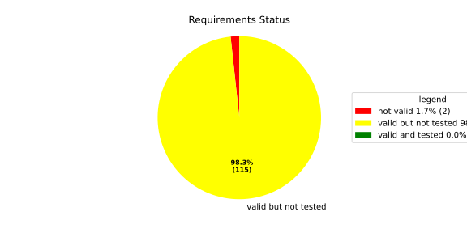
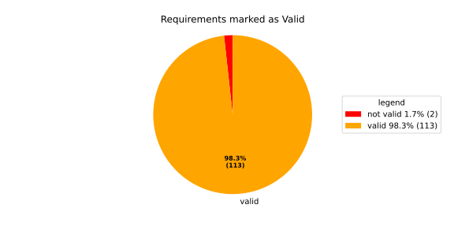
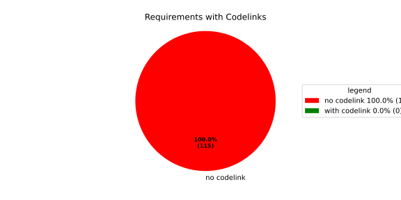

Component Requirements Statistics#
Overview#

In Detail#


No needs passed the filters
Failed Tests
Hint: This table should be empty. Before a PR can be merged all tests have to be successful.
No needs passed the filters
Skipped / Disabled Tests
No needs passed the filters
All passed Tests#
No needs passed the filters
Details About Testcases#
No needs passed the filters
No needs passed the filters
Test Log Files#
tests-report/src/launch_manager_daemon/health_monitor_lib/Notification_UT/test.log
exec ${PAGER:-/usr/bin/less} "$0" || exit 1
Executing tests from //src/launch_manager_daemon/health_monitor_lib:Notification_UT
-----------------------------------------------------------------------------
Running main() from gmock_main.cc
[==========] Running 5 tests from 2 test suites.
[----------] Global test environment set-up.
[----------] 4 tests from NotificationWithConfigTest
[ RUN ] NotificationWithConfigTest.CanGetNotificationName
mw::log initialization error: Error No logging configuration files could be found. occurred with context information: Failed to load configuration files. Fallback to console logging.
[ OK ] NotificationWithConfigTest.CanGetNotificationName (4 ms)
[ RUN ] NotificationWithConfigTest.SendsRequestAndNeverTimesOut
[ OK ] NotificationWithConfigTest.SendsRequestAndNeverTimesOut (0 ms)
[ RUN ] NotificationWithConfigTest.TimesOutWhenSendingRequestFails
2026/05/05 15:34:37.5277788 1388385 000 ECU1 NONE Rcvy log error verbose 2 Notification (TestNotification) Failed to enqueue recovery request (ring buffer full)
[ OK ] NotificationWithConfigTest.TimesOutWhenSendingRequestFails (2 ms)
[ RUN ] NotificationWithConfigTest.ProxyInitializationFails
2026/05/05 15:34:37.5277789 1388388 000 ECU1 NONE Rcvy log error verbose 3 Notification (TestNotification) Invalid ProcessGroupState identifier: InvalidIdentifier
[ OK ] NotificationWithConfigTest.ProxyInitializationFails (0 ms)
[----------] 4 tests from NotificationWithConfigTest (7 ms total)
[----------] 1 test from NotificationWithoutConfigTest
[ RUN ] NotificationWithoutConfigTest.WatchdogNotificationGoesDirectlyToTimeout
[ OK ] NotificationWithoutConfigTest.WatchdogNotificationGoesDirectlyToTimeout (0 ms)
[----------] 1 test from NotificationWithoutConfigTest (0 ms total)
[----------] Global test environment tear-down
[==========] 5 tests from 2 test suites ran. (7 ms total)
[ PASSED ] 5 tests.
tests-report/src/launch_manager_daemon/process_state_client_lib/processstateclient_UT/test.log
exec ${PAGER:-/usr/bin/less} "$0" || exit 1
Executing tests from //src/launch_manager_daemon/process_state_client_lib:processstateclient_UT
-----------------------------------------------------------------------------
Running main() from gmock_main.cc
[==========] Running 4 tests from 1 test suite.
[----------] Global test environment set-up.
[----------] 4 tests from ProcessStateClient_UT
[ RUN ] ProcessStateClient_UT.ProcessStateClient_ConstructReceiver_Succeeds
[ OK ] ProcessStateClient_UT.ProcessStateClient_ConstructReceiver_Succeeds (0 ms)
[ RUN ] ProcessStateClient_UT.ProcessStateClient_QueueOneProcess_Succeeds
[ OK ] ProcessStateClient_UT.ProcessStateClient_QueueOneProcess_Succeeds (0 ms)
[ RUN ] ProcessStateClient_UT.ProcessStateClient_QueueMaxNumberOfProcesses_Succeeds
[ OK ] ProcessStateClient_UT.ProcessStateClient_QueueMaxNumberOfProcesses_Succeeds (53 ms)
[ RUN ] ProcessStateClient_UT.ProcessStateClient_QueueOneProcessTooMany_Fails
mw::log initialization error: Error No logging configuration files could be found. occurred with context information: Failed to load configuration files. Fallback to console logging.
2026/05/05 15:34:38.5278131 1391806 000 ECU1 NONE LM log error verbose 1 Failed to queue posix process
2026/05/05 15:34:38.5278131 1391809 000 ECU1 NONE LM log error verbose 1 ProcessStateReceiver::getNextChangedPosixProcess: Overflow occurred, will be reported as kCommunicationError
[ OK ] ProcessStateClient_UT.ProcessStateClient_QueueOneProcessTooMany_Fails (17 ms)
[----------] 4 tests from ProcessStateClient_UT (71 ms total)
[----------] Global test environment tear-down
[==========] 4 tests from 1 test suite ran. (78 ms total)
[ PASSED ] 4 tests.
tests-report/src/launch_manager_daemon/recovery_client_lib/recovery_client_UT/test.log
exec ${PAGER:-/usr/bin/less} "$0" || exit 1
Executing tests from //src/launch_manager_daemon/recovery_client_lib:recovery_client_UT
-----------------------------------------------------------------------------
Running main() from gmock_main.cc
[==========] Running 5 tests from 1 test suite.
[----------] Global test environment set-up.
[----------] 5 tests from RecoveryClientTest
[ RUN ] RecoveryClientTest.SendSingleRequest
[ OK ] RecoveryClientTest.SendSingleRequest (0 ms)
[ RUN ] RecoveryClientTest.GetNextRequest
[ OK ] RecoveryClientTest.GetNextRequest (0 ms)
[ RUN ] RecoveryClientTest.GetNextRequestEmpty
[ OK ] RecoveryClientTest.GetNextRequestEmpty (0 ms)
[ RUN ] RecoveryClientTest.RingBufferFull
[ OK ] RecoveryClientTest.RingBufferFull (0 ms)
[ RUN ] RecoveryClientTest.FIFOOrdering
[ OK ] RecoveryClientTest.FIFOOrdering (0 ms)
[----------] 5 tests from RecoveryClientTest (0 ms total)
[----------] Global test environment tear-down
[==========] 5 tests from 1 test suite ran. (0 ms total)
[ PASSED ] 5 tests.
tests-report/src/launch_manager_daemon/common/identifier_hash_UT/test.log
exec ${PAGER:-/usr/bin/less} "$0" || exit 1
Executing tests from //src/launch_manager_daemon/common:identifier_hash_UT
-----------------------------------------------------------------------------
Running main() from gmock_main.cc
[==========] Running 7 tests from 1 test suite.
[----------] Global test environment set-up.
[----------] 7 tests from IdentifierHashTest
[ RUN ] IdentifierHashTest.IdentifierHash_with_string_view_created
[ OK ] IdentifierHashTest.IdentifierHash_with_string_view_created (0 ms)
[ RUN ] IdentifierHashTest.IdentifierHash_with_string_created
[ OK ] IdentifierHashTest.IdentifierHash_with_string_created (0 ms)
[ RUN ] IdentifierHashTest.IdentifierHash_default_created
[ OK ] IdentifierHashTest.IdentifierHash_default_created (0 ms)
[ RUN ] IdentifierHashTest.IdentifierHash_invalid_hash_no_string_representation
[ OK ] IdentifierHashTest.IdentifierHash_invalid_hash_no_string_representation (0 ms)
[ RUN ] IdentifierHashTest.IdentifierHash_no_dangling_pointer_after_source_string_dies
[ OK ] IdentifierHashTest.IdentifierHash_no_dangling_pointer_after_source_string_dies (0 ms)
[ RUN ] IdentifierHashTest.IdentifierHash_EqualityOperators
[ OK ] IdentifierHashTest.IdentifierHash_EqualityOperators (0 ms)
[ RUN ] IdentifierHashTest.IdentifierHash_LessThanOperator
[ OK ] IdentifierHashTest.IdentifierHash_LessThanOperator (0 ms)
[----------] 7 tests from IdentifierHashTest (0 ms total)
[----------] Global test environment tear-down
[==========] 7 tests from 1 test suite ran. (0 ms total)
[ PASSED ] 7 tests.
tests-report/src/health_monitoring_lib/tests/test.log
exec ${PAGER:-/usr/bin/less} "$0" || exit 1
Executing tests from //src/health_monitoring_lib:tests
-----------------------------------------------------------------------------
running 232 tests
test common::tests::time_offset_diff_too_large - should panic ... ok
test common::tests::duration_to_int_too_large - should panic ... ok
test common::tests::time_offset_valid ... ok
test common::tests::duration_to_int_valid ... ok
test common::tests::time_offset_wrong_order ... ok
test common::tests::time_range_from_interval_lower_too_large - should panic ... ok
test common::tests::time_range_from_interval_valid ... ok
test common::tests::time_range_new_valid ... ok
test common::tests::time_range_new_wrong_order - should panic ... ok
test deadline::common::tests::acquire_and_release_deadline ... ok
test deadline::common::tests::new_and_fields ... ok
test deadline::deadline_monitor::tests::deadline_outside_time_range_is_error_when_dropped_after_evaluate ... ok
test deadline::deadline_monitor::tests::get_deadline_unknown_tag ... ok
test deadline::deadline_monitor::tests::deadline_failed_on_first_run_and_then_restarted_is_evaluated_as_error ... ok
test deadline::deadline_monitor::tests::start_stop_deadline_outside_ranges_is_error_when_dropped_before_evaluate ... ok
test deadline::common::tests::concurrent_acquire ... ok
test deadline::deadline_monitor::tests::start_stop_deadline_outside_ranges_is_evaluated_as_error ... ok
test deadline::deadline_state::tests::as_u64_and_new ... ok
test deadline::deadline_state::tests::deadline_state_default_and_snapshot ... ok
test deadline::deadline_state::tests::deadline_state_update_none_returns_err ... ok
test deadline::deadline_state::tests::deadline_state_update_success ... ok
test deadline::deadline_state::tests::default_state ... ok
test deadline::deadline_state::tests::set_and_get_timestamp_ms ... ok
test deadline::deadline_state::tests::set_running ... ok
test deadline::deadline_state::tests::set_underrun ... ok
test deadline::ffi::tests::deadline_destroy_null_deadline ... ok
test deadline::ffi::tests::deadline_monitor_builder_add_deadline_invalid_range ... ok
test deadline::ffi::tests::deadline_monitor_builder_add_deadline_null_builder ... ok
test deadline::ffi::tests::deadline_monitor_builder_add_deadline_null_deadline_tag ... ok
test deadline::ffi::tests::deadline_monitor_builder_add_deadline_succeeds ... ok
test deadline::ffi::tests::deadline_monitor_builder_create_null_builder ... ok
test deadline::ffi::tests::deadline_monitor_builder_create_succeeds ... ok
test deadline::ffi::tests::deadline_monitor_builder_destroy_null_builder ... ok
test deadline::ffi::tests::deadline_monitor_destroy_null_monitor ... ok
test deadline::ffi::tests::deadline_monitor_get_deadline_null_deadline_handle ... ok
test deadline::ffi::tests::deadline_monitor_get_deadline_null_deadline_tag ... ok
test deadline::ffi::tests::deadline_monitor_get_deadline_null_monitor ... ok
test deadline::ffi::tests::deadline_monitor_get_deadline_succeeds ... ok
test deadline::ffi::tests::deadline_monitor_get_deadline_unknown_deadline ... ok
test deadline::ffi::tests::deadline_start_already_started ... ok
test deadline::ffi::tests::deadline_start_null_deadline ... ok
test deadline::ffi::tests::deadline_start_succeeds ... ok
test deadline::ffi::tests::deadline_stop_null_deadline ... ok
test deadline::ffi::tests::deadline_stop_succeeds ... ok
test ffi::tests::health_monitor_builder_add_deadline_monitor_null_deadline_monitor_builder ... ok
test ffi::tests::health_monitor_builder_add_deadline_monitor_null_hmon_builder ... ok
test ffi::tests::health_monitor_builder_add_deadline_monitor_null_monitor_tag ... ok
test ffi::tests::health_monitor_builder_add_deadline_monitor_succeeds ... ok
test ffi::tests::health_monitor_builder_add_heartbeat_monitor_null_heartbeat_monitor_builder ... ok
test ffi::tests::health_monitor_builder_add_heartbeat_monitor_null_hmon_builder ... ok
test ffi::tests::health_monitor_builder_add_heartbeat_monitor_null_monitor_tag ... ok
test ffi::tests::health_monitor_builder_add_heartbeat_monitor_succeeds ... ok
test ffi::tests::health_monitor_builder_add_logic_monitor_null_hmon_builder ... ok
test ffi::tests::health_monitor_builder_add_logic_monitor_null_logic_monitor_builder ... ok
test ffi::tests::health_monitor_builder_add_logic_monitor_null_monitor_tag ... ok
test ffi::tests::health_monitor_builder_add_logic_monitor_succeeds ... ok
test ffi::tests::health_monitor_builder_build_invalid_cycle_intervals ... ok
test ffi::tests::health_monitor_builder_build_no_monitors ... ok
test ffi::tests::health_monitor_builder_build_null_builder_handle ... ok
test ffi::tests::health_monitor_builder_build_null_monitor_handle ... ok
test ffi::tests::health_monitor_builder_build_succeeds ... ok
test ffi::tests::health_monitor_builder_build_thread_parameters ... ok
test ffi::tests::health_monitor_builder_build_valid_cycle_intervals_succeeds ... ok
test ffi::tests::health_monitor_builder_create_null_handle ... ok
test ffi::tests::health_monitor_builder_create_succeeds ... ok
test ffi::tests::health_monitor_builder_destroy_null_handle ... ok
test ffi::tests::health_monitor_destroy_null_hmon ... ok
test ffi::tests::health_monitor_get_deadline_monitor_already_taken ... ok
test ffi::tests::health_monitor_get_deadline_monitor_null_deadline_monitor ... ok
test ffi::tests::health_monitor_get_deadline_monitor_null_monitor_tag ... ok
test ffi::tests::health_monitor_get_deadline_monitor_null_hmon ... ok
test ffi::tests::health_monitor_get_deadline_monitor_succeeds ... ok
test ffi::tests::health_monitor_get_heartbeat_monitor_already_taken ... ok
test ffi::tests::health_monitor_get_heartbeat_monitor_null_heartbeat_monitor ... ok
test ffi::tests::health_monitor_get_heartbeat_monitor_null_hmon ... ok
test ffi::tests::health_monitor_get_heartbeat_monitor_null_monitor_tag ... ok
test ffi::tests::health_monitor_get_heartbeat_monitor_succeeds ... ok
test ffi::tests::health_monitor_get_logic_monitor_already_taken ... ok
test ffi::tests::health_monitor_get_logic_monitor_null_hmon ... ok
test ffi::tests::health_monitor_get_logic_monitor_null_logic_monitor ... ok
test ffi::tests::health_monitor_get_logic_monitor_null_monitor_tag ... ok
test ffi::tests::health_monitor_get_logic_monitor_succeeds ... ok
test ffi::tests::health_monitor_start_monitor_not_taken ... ok
test ffi::tests::health_monitor_start_null_hmon ... ok
[2026/04/28 06:24:01.7923605][9537][HMON][INFO] Monitoring thread started.
[2026/04/28 06:24:01.7923735][9537][HMON][INFO] Monitoring thread exiting.
test health_monitor::tests::health_monitor_builder_build_invalid_cycles ... ok
test ffi::tests::health_monitor_start_succeeds ... ok
test health_monitor::tests::health_monitor_builder_build_no_monitors ... ok
test health_monitor::tests::health_monitor_builder_build_succeeds ... ok
test health_monitor::tests::health_monitor_builder_new_succeeds ... ok
test health_monitor::tests::health_monitor_get_deadline_monitor_available ... ok
test health_monitor::tests::health_monitor_get_deadline_monitor_invalid_state ... ok
test health_monitor::tests::health_monitor_get_deadline_monitor_taken ... ok
test health_monitor::tests::health_monitor_get_heartbeat_monitor_available ... ok
test health_monitor::tests::health_monitor_get_deadline_monitor_unknown ... ok
test health_monitor::tests::health_monitor_get_heartbeat_monitor_invalid_state ... ok
test health_monitor::tests::health_monitor_get_heartbeat_monitor_taken ... ok
test health_monitor::tests::health_monitor_get_heartbeat_monitor_unknown ... ok
test health_monitor::tests::health_monitor_get_logic_monitor_invalid_state ... ok
test health_monitor::tests::health_monitor_get_logic_monitor_available ... ok
test health_monitor::tests::health_monitor_get_logic_monitor_taken ... ok
test health_monitor::tests::health_monitor_get_logic_monitor_unknown ... ok
test health_monitor::tests::health_monitor_start_monitors_not_taken - should panic ... ok
[2026/04/28 06:24:01.7938501][9537][HMON][INFO] Monitoring thread started.
test heartbeat::ffi::tests::heartbeat_monitor_builder_create_invalid_range ... ok
[2026/04/28 06:24:01.7939423][9537][HMON][INFO] Monitoring thread exiting.
test heartbeat::ffi::tests::heartbeat_monitor_builder_create_null_builder ... ok
test health_monitor::tests::health_monitor_start_succeeds ... ok
test heartbeat::ffi::tests::heartbeat_monitor_builder_create_succeeds ... ok
test heartbeat::ffi::tests::heartbeat_monitor_builder_destroy_null_builder ... ok
test heartbeat::ffi::tests::heartbeat_monitor_heartbeat_null_monitor ... ok
test heartbeat::ffi::tests::heartbeat_monitor_destroy_null_monitor ... ok
test heartbeat::ffi::tests::heartbeat_monitor_heartbeat_succeeds ... ok
test deadline::deadline_monitor::tests::monitor_with_multiple_running_deadlines ... ok
test heartbeat::heartbeat_monitor::tests::heartbeat_monitor_beat_early_evaluate_early ... ok
test heartbeat::heartbeat_monitor::tests::heartbeat_monitor_beat_early_evaluate_in_range ... ok
test heartbeat::heartbeat_monitor::tests::heartbeat_monitor_beat_in_range_evaluate_in_range ... ok
test heartbeat::heartbeat_monitor::tests::heartbeat_monitor_beat_early_evaluate_late ... ok
test heartbeat::heartbeat_monitor::tests::heartbeat_monitor_builder_build_invalid_internal_processing_cycle ... ok
test heartbeat::heartbeat_monitor::tests::heartbeat_monitor_builder_build_ok ... ok
test heartbeat::heartbeat_monitor::tests::heartbeat_monitor_beat_in_range_evaluate_late ... ok
test heartbeat::heartbeat_monitor::tests::heartbeat_monitor_beat_late_evaluate_late ... ok
test heartbeat::heartbeat_monitor::tests::heartbeat_monitor_cycle_early ... ok
test heartbeat::heartbeat_monitor::tests::heartbeat_monitor_multiple_beats_early_evaluate_early ... ok
test heartbeat::heartbeat_monitor::tests::heartbeat_monitor_cycle_in_range ... ok
test heartbeat::heartbeat_monitor::tests::heartbeat_monitor_multiple_beats_early_evaluate_in_range ... ok
test heartbeat::heartbeat_monitor::tests::heartbeat_monitor_cycle_late ... ok
test heartbeat::heartbeat_monitor::tests::heartbeat_monitor_multiple_beats_early_evaluate_late ... ok
test heartbeat::heartbeat_monitor::tests::heartbeat_monitor_multiple_beats_in_range_evaluate_in_range ... ok
test heartbeat::heartbeat_monitor::tests::heartbeat_monitor_no_beat_evaluate_early ... ok
test heartbeat::heartbeat_monitor::tests::heartbeat_monitor_no_beat_evaluate_in_range ... ok
test heartbeat::heartbeat_monitor::tests::heartbeat_monitor_multiple_beats_in_range_evaluate_late ... ok
test heartbeat::heartbeat_monitor::tests::heartbeat_monitor_multiple_beats_late_evaluate_late ... ok
test heartbeat::heartbeat_state::tests::snapshot_counter_increment ... ok
test heartbeat::heartbeat_state::tests::snapshot_default ... ok
test heartbeat::heartbeat_state::tests::snapshot_from_u64_max ... ok
test heartbeat::heartbeat_state::tests::snapshot_from_u64_valid ... ok
test heartbeat::heartbeat_state::tests::snapshot_from_u64_zero ... ok
test heartbeat::heartbeat_state::tests::snapshot_new_succeeds ... ok
test heartbeat::heartbeat_state::tests::snapshot_set_heartbeat_timestamp_out_of_range - should panic ... ok
test heartbeat::heartbeat_state::tests::snapshot_set_heartbeat_timestamp_valid ... ok
test heartbeat::heartbeat_state::tests::state_default ... ok
test heartbeat::heartbeat_state::tests::state_new ... ok
test heartbeat::heartbeat_state::tests::state_reset ... ok
test heartbeat::heartbeat_state::tests::state_snapshot ... ok
test heartbeat::heartbeat_state::tests::state_update_none ... ok
test heartbeat::heartbeat_state::tests::state_update_some ... ok
test logic::ffi::tests::logic_monitor_builder_add_state_null_allowed_states_many_elements ... ok
test logic::ffi::tests::logic_monitor_builder_add_state_null_allowed_states_zero_elements ... ok
test logic::ffi::tests::logic_monitor_builder_add_state_null_builder ... ok
test logic::ffi::tests::logic_monitor_builder_add_state_null_tag ... ok
test logic::ffi::tests::logic_monitor_builder_add_state_succeeds ... ok
test logic::ffi::tests::logic_monitor_builder_create_null_builder ... ok
test logic::ffi::tests::logic_monitor_builder_create_null_initial_state ... ok
test logic::ffi::tests::logic_monitor_builder_create_succeeds ... ok
test logic::ffi::tests::logic_monitor_builder_destroy_null_builder ... ok
test logic::ffi::tests::logic_monitor_destroy_null_monitor ... ok
test logic::ffi::tests::logic_monitor_state_fails ... ok
test logic::ffi::tests::logic_monitor_state_null_monitor ... ok
test logic::ffi::tests::logic_monitor_state_null_state ... ok
test logic::ffi::tests::logic_monitor_state_succeeds ... ok
test logic::ffi::tests::logic_monitor_transition_fails ... ok
test logic::ffi::tests::logic_monitor_transition_null_monitor ... ok
test logic::ffi::tests::logic_monitor_transition_null_target_state ... ok
test logic::ffi::tests::logic_monitor_transition_succeeds ... ok
test logic::logic_monitor::tests::logic_monitor_builder_build_no_states ... ok
test logic::logic_monitor::tests::logic_monitor_builder_build_succeeds ... ok
test logic::logic_monitor::tests::logic_monitor_builder_build_undefined_initial_state ... ok
test logic::logic_monitor::tests::logic_monitor_builder_build_undefined_target ... ok
test logic::logic_monitor::tests::logic_monitor_builder_new_succeeds ... ok
test logic::logic_monitor::tests::logic_monitor_evaluate_invalid_state ... ok
test logic::logic_monitor::tests::logic_monitor_evaluate_invalid_transition ... ok
test logic::logic_monitor::tests::logic_monitor_evaluate_succeeds ... ok
test logic::logic_monitor::tests::logic_monitor_state_indeterminate_current_state ... ok
test logic::logic_monitor::tests::logic_monitor_state_succeeds ... ok
test logic::logic_monitor::tests::logic_monitor_transition_indeterminate_current_state ... ok
test logic::logic_monitor::tests::logic_monitor_transition_invalid_transition ... ok
test logic::logic_monitor::tests::logic_monitor_transition_succeeds ... ok
test logic::logic_monitor::tests::logic_monitor_transition_unknown_node ... ok
test logic::logic_state::tests::snapshot_from_u64_max ... ok
test logic::logic_state::tests::snapshot_from_u64_valid ... ok
test logic::logic_state::tests::snapshot_from_u64_zero ... ok
test logic::logic_state::tests::snapshot_new_succeeds ... ok
test logic::logic_state::tests::snapshot_set_current_state_index_valid ... ok
test logic::logic_state::tests::snapshot_set_heartbeat_timestamp_out_of_range - should panic ... ok
test logic::logic_state::tests::snapshot_set_monitor_status_valid ... ok
test logic::logic_state::tests::state_new ... ok
test logic::logic_state::tests::state_snapshot ... ok
test logic::logic_state::tests::state_swap ... ok
test tag::tests::deadline_tag_debug ... ok
test tag::tests::deadline_tag_from_str ... ok
test tag::tests::deadline_tag_from_string ... ok
test tag::tests::deadline_tag_new ... ok
test tag::tests::deadline_tag_score_debug ... ok
test tag::tests::monitor_tag_debug ... ok
test tag::tests::monitor_tag_from_str ... ok
test tag::tests::monitor_tag_from_string ... ok
test tag::tests::monitor_tag_new ... ok
test tag::tests::monitor_tag_score_debug ... ok
test tag::tests::state_tag_debug ... ok
test tag::tests::state_tag_from_str ... ok
test tag::tests::state_tag_from_string ... ok
test tag::tests::state_tag_new ... ok
test tag::tests::state_tag_score_debug ... ok
test tag::tests::tag_debug ... ok
test tag::tests::tag_hash_is_eq ... ok
test tag::tests::tag_hash_is_ne ... ok
test tag::tests::tag_new ... ok
test tag::tests::tag_partial_eq_is_eq ... ok
test tag::tests::tag_partial_eq_is_ne ... ok
test tag::tests::tag_score_debug ... ok
test tag::tests::test_from_str ... ok
test tag::tests::test_from_string ... ok
test thread_ffi::tests::scheduler_policy_priority_max_null_priority ... ok
test thread_ffi::tests::scheduler_policy_priority_max_succeeds ... ok
test thread_ffi::tests::scheduler_policy_priority_min_null_priority ... ok
test thread_ffi::tests::scheduler_policy_priority_min_succeeds ... ok
test thread_ffi::tests::thread_parameters_affinity_null_affinity_many_elements ... ok
test thread_ffi::tests::thread_parameters_affinity_null_affinity_zero_elements ... ok
test thread_ffi::tests::thread_parameters_affinity_null_handle ... ok
test thread_ffi::tests::thread_parameters_affinity_succeeds ... ok
test thread_ffi::tests::thread_parameters_create_succeeds ... ok
test thread_ffi::tests::thread_parameters_destroy_null_handle ... ok
test thread_ffi::tests::thread_parameters_scheduler_parameters_invalid_priority ... ok
test thread_ffi::tests::thread_parameters_scheduler_parameters_null_handle ... ok
test thread_ffi::tests::thread_parameters_scheduler_parameters_succeeds ... ok
test thread_ffi::tests::thread_parameters_stack_size_null_handle ... ok
test thread_ffi::tests::thread_parameters_stack_size_succeeds ... ok
test worker::tests::monitoring_logic_report_alive_on_each_call_when_no_error ... ok
test heartbeat::heartbeat_monitor::tests::heartbeat_monitor_no_beat_evaluate_late ... ok
test worker::tests::monitoring_logic_report_error_when_deadline_failed ... ok
[2026/04/28 06:24:02.7527556][9537][HMON][INFO] Monitoring thread started.
test deadline::deadline_monitor::tests::start_stop_deadline_within_range_works ... ok
[2026/04/28 06:24:02.8131427][9537][HMON][WARN] Deadline (DeadlineTag(deadline_fast)) missed! Expected: 50, now: 60
[2026/04/28 06:24:02.8131727][9537][HMON][WARN] Deadline monitor with tag MonitorTag(deadline_monitor) reported error: TooLate.
[2026/04/28 06:24:02.8131797][9537][HMON][WARN] One or more monitors reported errors, skipping AliveAPI notification.
[2026/04/28 06:24:02.8131845][9537][HMON][INFO] Monitoring logic failed, stopping thread.
[2026/04/28 06:24:02.8131888][9537][HMON][INFO] Monitoring thread exiting.
test worker::tests::monitoring_logic_report_alive_respect_cycle ... ok
test worker::tests::unique_thread_runner_monitoring_works ... ok
test heartbeat::heartbeat_monitor::tests::heartbeat_monitor_timestamp_offset ... ok
test result: ok. 232 passed; 0 failed; 0 ignored; 0 measured; 0 filtered out; finished in 1.25s
tests-report/src/health_monitoring_lib/loom_tests/test.log
exec ${PAGER:-/usr/bin/less} "$0" || exit 1
Executing tests from //src/health_monitoring_lib:loom_tests
-----------------------------------------------------------------------------
running 3 tests
test heartbeat::heartbeat_monitor::loom_tests::heartbeat_monitor_heartbeat_evaluate_too_early ... ok
test heartbeat::heartbeat_monitor::loom_tests::heartbeat_monitor_heartbeat_evaluate_in_range ... ok
test heartbeat::heartbeat_monitor::loom_tests::heartbeat_monitor_heartbeat_evaluate_too_late ... ok
test result: ok. 3 passed; 0 failed; 0 ignored; 0 measured; 0 filtered out; finished in 0.70s
tests-report/src/health_monitoring_lib/cpp_tests/test.log
exec ${PAGER:-/usr/bin/less} "$0" || exit 1
Executing tests from //src/health_monitoring_lib:cpp_tests
-----------------------------------------------------------------------------
Running main() from gmock_main.cc
[==========] Running 1 test from 1 test suite.
[----------] Global test environment set-up.
[----------] 1 test from HealthMonitorTest
[ RUN ] HealthMonitorTest.TestName
[2026/04/28 06:24:01.1786942][src/health_monitoring_lib/rust/deadline/deadline_monitor.rs:217][9511][HMON][ERROR] Deadline DeadlineTag(deadline_1) stopped too early by 100 ms
[2026/04/28 06:24:01.1830849][src/health_monitoring_lib/rust/worker.rs:121][9511][HMON][INFO] Monitoring thread started.
[2026/04/28 06:24:01.1831156][src/health_monitoring_lib/rust/worker.rs:139][9511][HMON][INFO] Monitoring thread exiting.
[ OK ] HealthMonitorTest.TestName (6 ms)
[----------] 1 test from HealthMonitorTest (6 ms total)
[----------] Global test environment tear-down
[==========] 1 test from 1 test suite ran. (7 ms total)
[ PASSED ] 1 test.
tests-report/tests/integration/smoke/smoke/test.log
exec ${PAGER:-/usr/bin/less} "$0" || exit 1
Executing tests from //tests/integration/smoke:smoke
-----------------------------------------------------------------------------
============================= test session starts ==============================
platform linux -- Python 3.12.12, pytest-9.0.3, pluggy-1.5.0
rootdir: /home/runner/.bazel/sandbox/processwrapper-sandbox/801/execroot/_main/bazel-out/k8-fastbuild/bin/tests/integration/smoke/smoke.runfiles/score_itf+
configfile: pytest.ini
collected 1 item
../score_itf+::test_smoke
-------------------------------- live log setup --------------------------------
[2026-05-05 15:34:39.710] [INFO] [score.itf.plugins.docker] Executing custom image bootstrap command: tests/utils/environments/x86_64-linux/x86_64-linux.sh
[2026-05-05 15:34:40.700] [DEBUG] [docker.utils.config] Trying paths: ['/home/runner/.docker/config.json', '/home/runner/.dockercfg']
[2026-05-05 15:34:40.700] [DEBUG] [docker.utils.config] Found file at path: /home/runner/.docker/config.json
[2026-05-05 15:34:40.701] [DEBUG] [docker.auth] Found 'auths' section
[2026-05-05 15:34:40.701] [DEBUG] [docker.auth] Found entry (registry='https://index.docker.io/v1/', username='githubactions')
[2026-05-05 15:34:40.707] [DEBUG] [urllib3.connectionpool] http://localhost:None "GET /version HTTP/1.1" 200 823
[2026-05-05 15:34:42.135] [DEBUG] [urllib3.connectionpool] http://localhost:None "POST /v1.48/containers/create HTTP/1.1" 201 88
[2026-05-05 15:34:42.137] [DEBUG] [urllib3.connectionpool] http://localhost:None "GET /v1.48/containers/74f671acba4a1b835c4bcf8f18e0d5058f83cf0e89b9dbbd101b006be8643133/json HTTP/1.1" 200 None
[2026-05-05 15:34:42.273] [DEBUG] [urllib3.connectionpool] http://localhost:None "POST /v1.48/containers/74f671acba4a1b835c4bcf8f18e0d5058f83cf0e89b9dbbd101b006be8643133/start HTTP/1.1" 204 0
[2026-05-05 15:34:42.273] [DEBUG] [docker.utils.config] Trying paths: ['/home/runner/.docker/config.json', '/home/runner/.dockercfg']
[2026-05-05 15:34:42.274] [DEBUG] [docker.utils.config] Found file at path: /home/runner/.docker/config.json
[2026-05-05 15:34:42.274] [DEBUG] [docker.auth] Found 'auths' section
[2026-05-05 15:34:42.274] [DEBUG] [docker.auth] Found entry (registry='https://index.docker.io/v1/', username='githubactions')
[2026-05-05 15:34:42.279] [DEBUG] [urllib3.connectionpool] http://localhost:None "GET /version HTTP/1.1" 200 823
[2026-05-05 15:34:42.280] [DEBUG] [urllib3.connectionpool] http://localhost:None "POST /v1.48/containers/74f671acba4a1b835c4bcf8f18e0d5058f83cf0e89b9dbbd101b006be8643133/exec HTTP/1.1" 201 74
[2026-05-05 15:34:42.282] [DEBUG] [urllib3.connectionpool] http://localhost:None "POST /v1.48/exec/aa528efba531b04b6fe58bda6a06fe197ac75e425a7f9f19ab338fb6748ac151/start HTTP/1.1" 101 0
[2026-05-05 15:34:42.314] [DEBUG] [urllib3.connectionpool] http://localhost:None "GET /v1.48/exec/aa528efba531b04b6fe58bda6a06fe197ac75e425a7f9f19ab338fb6748ac151/json HTTP/1.1" 200 390
[2026-05-05 15:34:42.337] [DEBUG] [urllib3.connectionpool] http://localhost:None "PUT /v1.48/containers/74f671acba4a1b835c4bcf8f18e0d5058f83cf0e89b9dbbd101b006be8643133/archive?path=%2Ftmp HTTP/1.1" 200 0
[2026-05-05 15:34:42.338] [DEBUG] [urllib3.connectionpool] http://localhost:None "POST /v1.48/containers/74f671acba4a1b835c4bcf8f18e0d5058f83cf0e89b9dbbd101b006be8643133/exec HTTP/1.1" 201 74
[2026-05-05 15:34:42.339] [DEBUG] [urllib3.connectionpool] http://localhost:None "POST /v1.48/exec/1d4e3334dc338be105805d4585d68f880be6303d6cd776a0018b7a07cb567b43/start HTTP/1.1" 101 0
[2026-05-05 15:34:42.386] [DEBUG] [urllib3.connectionpool] http://localhost:None "GET /v1.48/exec/1d4e3334dc338be105805d4585d68f880be6303d6cd776a0018b7a07cb567b43/json HTTP/1.1" 200 416
[2026-05-05 15:34:42.386] [INFO] [tests.utils.testing_utils.setup_test] Test case setup finished
-------------------------------- live log call ---------------------------------
[2026-05-05 15:34:42.388] [DEBUG] [urllib3.connectionpool] http://localhost:None "POST /v1.48/containers/74f671acba4a1b835c4bcf8f18e0d5058f83cf0e89b9dbbd101b006be8643133/exec HTTP/1.1" 201 74
[2026-05-05 15:34:42.389] [DEBUG] [urllib3.connectionpool] http://localhost:None "POST /v1.48/exec/6080ca0ec1fb05fc1ee286be92c591f2fbedf45ece6be3a63840d4b1d4d2a59e/start HTTP/1.1" 101 0
[2026-05-05 15:34:42.427] [DEBUG] [urllib3.connectionpool] http://localhost:None "GET /v1.48/exec/6080ca0ec1fb05fc1ee286be92c591f2fbedf45ece6be3a63840d4b1d4d2a59e/json HTTP/1.1" 200 404
[2026-05-05 15:34:42.428] [DEBUG] [urllib3.connectionpool] http://localhost:None "POST /v1.48/containers/74f671acba4a1b835c4bcf8f18e0d5058f83cf0e89b9dbbd101b006be8643133/exec HTTP/1.1" 201 74
[2026-05-05 15:34:42.429] [DEBUG] [urllib3.connectionpool] http://localhost:None "POST /v1.48/exec/feca34e82985b942701179134af337b67926c7e32775179b2e67711d868b4dcf/start HTTP/1.1" 101 0
[2026-05-05 15:34:42.463] [DEBUG] [urllib3.connectionpool] http://localhost:None "GET /v1.48/exec/feca34e82985b942701179134af337b67926c7e32775179b2e67711d868b4dcf/json HTTP/1.1" 200 442
[2026-05-05 15:34:42.464] [INFO] [launch_manager] mw::log initialization error: Error No logging configuration files could be found. occurred with context information: Failed to load configuration files. Fallback to console logging.
[2026-05-05 15:34:42.464] [INFO] [launch_manager] 2026/05/05 15:34:42.5282463 1435132 000 ECU1 NONE LM log warn verbose 1 Launch Manager Started !!!!
[2026-05-05 15:34:42.464] [INFO] [launch_manager] 2026/05/05 15:34:42.5282463 1435133 000 ECU1 NONE LM log warn verbose 1 Loading LCM Configurations...
[2026-05-05 15:34:42.465] [INFO] [launch_manager] 2026/05/05 15:34:42.5282464 1435134 000 ECU1 NONE LM log warn verbose 1 ECUCFG_ENV_VAR_ROOTFOLDER set successfully
[2026-05-05 15:34:42.465] [INFO] [launch_manager] 2026/05/05 15:34:42.5282464 1435134 000 ECU1 NONE LM log warn verbose 5 FlatBufferParser::getModeGroupPgName: MainPG ( IdentifierHash: 18079021346025578134 )
[2026-05-05 15:34:42.465] [DEBUG] [urllib3.connectionpool] http://localhost:None "POST /v1.48/containers/74f671acba4a1b835c4bcf8f18e0d5058f83cf0e89b9dbbd101b006be8643133/exec HTTP/1.1" 201 74
[2026-05-05 15:34:42.465] [INFO] [launch_manager] 2026/05/05 15:34:42.5282464 1435134 000 ECU1 NONE LM log warn verbose 5
[2026-05-05 15:34:42.466] [INFO] [launch_manager] FlatBufferParser::getModeGroupPgStateName: MainPG/Startup ( IdentifierHash: 10504605499600661529 )
[2026-05-05 15:34:42.467] [INFO] [launch_manager] 2026/05/05 15:34:42.5282464 1435135 000 ECU1 NONE LM log warn verbose 5 FlatBufferParser::getModeGroupPgStateName: MainPG/Running ( IdentifierHash: 15039935902284124227 )
[2026-05-05 15:34:42.467] [INFO] [launch_manager] 2026/05/05 15:34:42.5282464 1435136 000 ECU1 NONE LM log warn verbose 5 FlatBufferParser::getModeGroupPgStateName: MainPG/Off ( IdentifierHash: 15281793077830264047 )
[2026-05-05 15:34:42.467] [DEBUG] [urllib3.connectionpool] http://localhost:None "POST /v1.48/exec/3139fe29d8c51666eab249af96aabe919cb06640c2cda9e3705ea13fe0dced21/start HTTP/1.1" 101 0
[2026-05-05 15:34:42.467] [INFO] [launch_manager] 2026/05/05 15:34:42.5282464 1435136 000 ECU1 NONE LM log warn verbose 5
[2026-05-05 15:34:42.468] [INFO] [launch_manager] FlatBufferParser::getModeGroupPgStateName: MainPG/fallback_run_target ( IdentifierHash: 4059409696722237352 )
[2026-05-05 15:34:42.468] [INFO] [launch_manager] 2026/05/05 15:34:42.5282464 1435137 000 ECU1 NONE LM log warn verbose 4
[2026-05-05 15:34:42.468] [INFO] [launch_manager] parseProcessConfigurations: Process index: 0 executable_path_: /tmp/tests/smoke/control_daemon_mock
[2026-05-05 15:34:42.468] [INFO] [launch_manager] 2026/05/05 15:34:42.5282464 1435137 000 ECU1 NONE LM log warn verbose 3 Process control_daemon is Reporting execution state
[2026-05-05 15:34:42.468] [INFO] [launch_manager] 2026/05/05 15:34:42.5282464 1435138 000 ECU1 NONE LM log warn verbose 1 Process is STATE_MANAGEMENT function Cluster Affiliation
[2026-05-05 15:34:42.468] [INFO] [launch_manager] 2026/05/05 15:34:42.5282464 1435138 000 ECU1 NONE LM log warn verbose 3
[2026-05-05 15:34:42.468] [INFO] [launch_manager] Process control_daemon is NOT Self terminating
[2026-05-05 15:34:42.468] [INFO] [launch_manager] 2026/05/05 15:34:42.5282464 1435139 000 ECU1 NONE LM log warn verbose 4 ParseProcessProcessGroup: id:::pg_name_: MainPG , pg_state_name_: MainPG/Startup
[2026-05-05 15:34:42.468] [INFO] [launch_manager] 2026/05/05 15:34:42.5282464 1435139 000 ECU1 NONE LM log warn verbose 4 ParseProcessProcessGroup: id:::pg_name_: MainPG , pg_state_name_: MainPG/Running
[2026-05-05 15:34:42.468] [INFO] [launch_manager] 2026/05/05 15:34:42.5282464 1435139 000 ECU1 NONE LM log warn verbose 4 parseProcessConfigurations: Process index: 1 executable_path_: /tmp/tests/smoke/gtest_process
[2026-05-05 15:34:42.468] [INFO] [launch_manager] 2026/05/05 15:34:42.5282464 1435140 000 ECU1 NONE LM log warn verbose 3 Process gtest_process is Reporting execution state
[2026-05-05 15:34:42.468] [INFO] [launch_manager] 2026/05/05 15:34:42.5282464 1435140 000 ECU1 NONE LM log warn verbose 1 Process is NOT associated with any function Cluster Affiliation
[2026-05-05 15:34:42.468] [INFO] [launch_manager] 2026/05/05 15:34:42.5282464 1435140 000 ECU1 NONE LM log warn verbose 3 Process gtest_process is NOT Self terminating
[2026-05-05 15:34:42.468] [INFO] [launch_manager] 2026/05/05 15:34:42.5282464 1435140 000 ECU1 NONE LM log warn verbose 4 ParseProcessProcessGroup: id:::pg_name_: MainPG , pg_state_name_: MainPG/Running
[2026-05-05 15:34:42.468] [INFO] [launch_manager] 2026/05/05 15:34:42.5282464 1435140 000 ECU1 NONE LM log warn verbose 3 Loading SWCL Nr. 0 Succeeded
[2026-05-05 15:34:42.468] [INFO] [launch_manager] 2026/05/05 15:34:42.5282464 1435141 000 ECU1 NONE LM log warn verbose 2 1 process group(s)
[2026-05-05 15:34:42.468] [INFO] [launch_manager] 2026/05/05 15:34:42.5282464 1435141 000 ECU1 NONE LM log warn verbose 3 Creating graph with 2 nodes
[2026-05-05 15:34:42.468] [INFO] [launch_manager] 2026/05/05 15:34:42.5282464 1435141 000 ECU1 NONE LM log warn verbose 1 Process groups initialized successfully
[2026-05-05 15:34:42.469] [INFO] [launch_manager] 2026/05/05 15:34:42.5282464 1435141 000 ECU1 NONE LM log warn verbose 1 Process Group initialization done
[2026-05-05 15:34:42.469] [INFO] [launch_manager] 2026/05/05 15:34:42.5282464 1435141 000 ECU1 NONE LM log warn verbose 3 Creating Safe Process Map with 2 entries
[2026-05-05 15:34:42.469] [INFO] [launch_manager] 2026/05/05 15:34:42.5282464 1435141 000 ECU1 NONE LM log warn verbose 3 Creating job queue with 2 entries
[2026-05-05 15:34:42.469] [INFO] [launch_manager] 2026/05/05 15:34:42.5282464 1435141 000 ECU1 NONE LM log warn verbose 1 Creating worker threads...
[2026-05-05 15:34:42.469] [INFO] [launch_manager] 2026/05/05 15:34:42.5282465 1435152 000 ECU1 NONE LM log warn verbose 7 Process group index 0 (with name MainPG ) has 2 processes
[2026-05-05 15:34:42.469] [INFO] [launch_manager] 2026/05/05 15:34:42.5282465 1435152 000 ECU1 NONE LM log warn verbose 2 Creating process node with id: 0
[2026-05-05 15:34:42.469] [INFO] [launch_manager] 2026/05/05 15:34:42.5282465 1435152 000 ECU1 NONE LM log warn verbose 5 Process 0 has 0 start dependencies
[2026-05-05 15:34:42.469] [INFO] [launch_manager] 2026/05/05 15:34:42.5282465 1435152 000 ECU1 NONE LM log warn verbose 2 Creating process node with id: 1
[2026-05-05 15:34:42.469] [INFO] [launch_manager] 2026/05/05 15:34:42.5282465 1435153 000 ECU1 NONE LM log warn verbose 5 Process 1 has 0 start dependencies
[2026-05-05 15:34:42.469] [INFO] [launch_manager] 2026/05/05 15:34:42.5282465 1435153 000 ECU1 NONE LM log warn verbose 3 Created 2 process nodes
[2026-05-05 15:34:42.469] [INFO] [launch_manager] 2026/05/05 15:34:42.5282465 1435153 000 ECU1 NONE LM log warn verbose 2 Creating successor lists for process group MainPG
[2026-05-05 15:34:42.469] [INFO] [launch_manager] 2026/05/05 15:34:42.5282466 1435154 000 ECU1 NONE LM log warn verbose 1 Graphs initialized
[2026-05-05 15:34:42.469] [INFO] [launch_manager] 2026/05/05 15:34:42.5282466 1435156 000 ECU1 NONE Fcty log warn verbose 2 Factory for FlatCfg MachineConfig: No watchdog configured
[2026-05-05 15:34:42.469] [INFO] [launch_manager] 2026/05/05 15:34:42.5282466 1435158 000 ECU1 NONE LM log warn verbose 1 LCM started successfully
[2026-05-05 15:34:42.470] [INFO] [launch_manager] 2026/05/05 15:34:42.5282466 1435158 000 ECU1 NONE LM log warn verbose 3 clock() at run(): 23.876000 ms
[2026-05-05 15:34:42.470] [INFO] [launch_manager] 2026/05/05 15:34:42.5282466 1435159 000 ECU1 NONE LM log warn verbose 1 =============STARTING MAINPG STARTUP STATE============
[2026-05-05 15:34:42.470] [INFO] [launch_manager] 2026/05/05 15:34:42.5282466 1435159 000 ECU1 NONE LM log warn verbose 9 Graph::setState changes from kSuccess to kInTransition for PG 0 ( MainPG )
[2026-05-05 15:34:42.470] [INFO] [launch_manager] 2026/05/05 15:34:42.5282466 1435159 000 ECU1 NONE LM log warn verbose 2 Stop Dependencies: 0
[2026-05-05 15:34:42.470] [INFO] [launch_manager] 2026/05/05 15:34:42.5282466 1435160 000 ECU1 NONE LM log warn verbose 2 wait failed: Unable to wait for any child process to terminate. Error: No child processes
[2026-05-05 15:34:42.470] [INFO] [launch_manager] 2026/05/05 15:34:42.5282466 1435161 000 ECU1 NONE LM log warn verbose 2 Stop Dependencies: 0
[2026-05-05 15:34:42.470] [INFO] [launch_manager] 2026/05/05 15:34:42.5282466 1435161 000 ECU1 NONE LM log warn verbose 2 Start Dependencies: 0
[2026-05-05 15:34:42.470] [INFO] [launch_manager] 2026/05/05 15:34:42.5282466 1435161 000 ECU1 NONE LM log warn verbose 2 Start Dependencies: 0
[2026-05-05 15:34:42.470] [INFO] [launch_manager] 2026/05/05 15:34:42.5282466 1435162 000 ECU1 NONE LM log warn verbose 6 Starting process 0 ( control_daemon ) from executable /tmp/tests/smoke/control_daemon_mock
[2026-05-05 15:34:42.470] [INFO] [launch_manager] 2026/05/05 15:34:42.5282466 1435162 000 ECU1 NONE LM log warn verbose 3 Initialize the control client for control_daemon process
[2026-05-05 15:34:42.470] [INFO] [launch_manager] 2026/05/05 15:34:42.5282466 1435162 000 ECU1 NONE LM log warn verbose 1 ControlClientChannel initialized
[2026-05-05 15:34:42.470] [INFO] [launch_manager] 2026/05/05 15:34:42.5282467 1435165 000 ECU1 NONE LM log warn verbose 4 startProcess pid 68 received for process: control_daemon
[2026-05-05 15:34:42.470] [INFO] [launch_manager] 2026/05/05 15:34:42.5282467 1435165 000 ECU1 NONE LM log warn verbose 1 ControlClientChannel obtained from sync.
[2026-05-05 15:34:42.470] [INFO] [launch_manager] [==========] Running 1 test from 1 test suite.
[2026-05-05 15:34:42.470] [INFO] [launch_manager] [----------] Global test environment set-up.
[2026-05-05 15:34:42.471] [INFO] [launch_manager] [----------] 1 test from Smoke
[2026-05-05 15:34:42.471] [INFO] [launch_manager] [ RUN ] Smoke.Daemon
[2026-05-05 15:34:42.471] [INFO] [launch_manager] [ STEP ] Control daemon report kRunning
[2026-05-05 15:34:42.471] [INFO] [launch_manager] [ END STEP ] Control daemon report kRunning
[2026-05-05 15:34:42.471] [INFO] [launch_manager] [ STEP ] Activate RunTarget Running
[2026-05-05 15:34:42.471] [INFO] [launch_manager] mw::log initialization error: Error No logging configuration files could be found. occurred with context information: Failed to load configuration files. Fallback to console logging.
[2026-05-05 15:34:42.472] [INFO] [launch_manager] 2026/05/05 15:34:42.5282471 1435214 000 ECU1 NONE LM log warn verbose 1 Request sent. Waiting for acknowledgment...
[2026-05-05 15:34:42.473] [INFO] [launch_manager] 2026/05/05 15:34:42.5282472 1435223 000 ECU1 NONE LM log warn verbose 8 ProcessGroupManager::ControlClientHandler: got request kSetStateRequest ( 16 ) re state MainPG/Running of PG MainPG
[2026-05-05 15:34:42.473] [INFO] [launch_manager] 2026/05/05 15:34:42.5282473 1435224 000 ECU1 NONE LM log warn verbose 6 Pending state for process group MainPG changed from to MainPG/Running
[2026-05-05 15:34:42.473] [INFO] [launch_manager] 2026/05/05 15:34:42.5282473 1435224 000 ECU1 NONE LM log warn verbose 9 Graph::setState changes from kInTransition to kCancelled for PG 0 ( MainPG )
[2026-05-05 15:34:42.473] [INFO] [launch_manager] 2026/05/05 15:34:42.5282473 1435224 000 ECU1 NONE LM log warn verbose 1
[2026-05-05 15:34:42.473] [INFO] [launch_manager] Control Client handler nudged
[2026-05-05 15:34:42.473] [INFO] [launch_manager] 2026/05/05 15:34:42.5282473 1435225 000 ECU1 NONE LM log warn verbose 1
[2026-05-05 15:34:42.473] [INFO] [launch_manager] 2026/05/05 15:34:42.5282473 1435226 000 ECU1 NONE LM log warn verbose 1 Request acknowledged.
[2026-05-05 15:34:42.473] [INFO] [launch_manager] Request acknowledged.
[2026-05-05 15:34:42.473] [INFO] [launch_manager] 2026/05/05 15:34:42.5282473 1435228 000 ECU1 NONE LM log warn verbose 8 Got kRunning for pid 68 ( control_daemon ) process 0 of group MainPG
[2026-05-05 15:34:42.473] [INFO] [launch_manager] 2026/05/05 15:34:42.5282473 1435230 000 ECU1 NONE LM log warn verbose 7 startProcess for MainPG process 0 ( control_daemon ) done
[2026-05-05 15:34:42.473] [INFO] [launch_manager] 2026/05/05 15:34:42.5282473 1435231 000 ECU1 NONE LM log warn verbose 1 Control Client handler nudged
[2026-05-05 15:34:42.474] [INFO] [launch_manager] 2026/05/05 15:34:42.5282473 1435232 000 ECU1 NONE LM log fatal verbose 3 clock() at failed initial state transition: 25.088000 ms
[2026-05-05 15:34:42.474] [INFO] [launch_manager] 2026/05/05 15:34:42.5282473 1435232 000 ECU1 NONE LM log warn verbose 9 Graph::setState changes from kCancelled to kUndefinedState for PG 0 ( MainPG )
[2026-05-05 15:34:42.474] [INFO] [launch_manager] 2026/05/05 15:34:42.5282473 1435233 000 ECU1 NONE LM log warn verbose 1 Control Client handler nudged
[2026-05-05 15:34:42.476] [INFO] [launch_manager] 2026/05/05 15:34:42.5282475 1435247 000 ECU1 NONE LM log warn verbose 6 Pending state for process group MainPG changed from MainPG/Running to
[2026-05-05 15:34:42.476] [INFO] [launch_manager] 2026/05/05 15:34:42.5282475 1435247 000 ECU1 NONE LM log warn verbose 4 Start transition to MainPG/Running for PG MainPG
[2026-05-05 15:34:42.476] [INFO] [launch_manager] 2026/05/05 15:34:42.5282475 1435248 000 ECU1 NONE LM log warn verbose 9 Graph::setState changes from kUndefinedState to kInTransition for PG 0 ( MainPG )
[2026-05-05 15:34:42.476] [INFO] [launch_manager] 2026/05/05 15:34:42.5282475 1435248 000 ECU1 NONE LM log warn verbose 2 Stop Dependencies: 0
[2026-05-05 15:34:42.476] [INFO] [launch_manager] 2026/05/05 15:34:42.5282475 1435248 000 ECU1 NONE LM log warn verbose 2 Stop Dependencies: 0
[2026-05-05 15:34:42.476] [INFO] [launch_manager] 2026/05/05 15:34:42.5282475 1435248 000 ECU1 NONE LM log warn verbose 2 Start Dependencies: 0
[2026-05-05 15:34:42.476] [INFO] [launch_manager] 2026/05/05 15:34:42.5282475 1435248 000 ECU1 NONE LM log warn verbose 2 Start Dependencies: 0
[2026-05-05 15:34:42.476] [INFO] [launch_manager] 2026/05/05 15:34:42.5282475 1435249 000 ECU1 NONE LM log warn verbose 6 Starting process 1 ( gtest_process ) from executable /tmp/tests/smoke/gtest_process
[2026-05-05 15:34:42.476] [INFO] [launch_manager] 2026/05/05 15:34:42.5282476 1435254 000 ECU1 NONE LM log warn verbose 4 startProcess pid 70 received for process: gtest_process
[2026-05-05 15:34:42.477] [INFO] [launch_manager] [==========] Running 1 test from 1 test suite.
[2026-05-05 15:34:42.477] [INFO] [launch_manager] [----------] Global test environment set-up.
[2026-05-05 15:34:42.477] [INFO] [launch_manager] [----------] 1 test from Smoke
[2026-05-05 15:34:42.478] [INFO] [launch_manager] [ RUN ] Smoke.Process
[2026-05-05 15:34:42.480] [INFO] [launch_manager] [ OK ] Smoke.Process (2 ms)
[2026-05-05 15:34:42.480] [INFO] [launch_manager] [----------] 1 test from Smoke (2 ms total)
[2026-05-05 15:34:42.480] [INFO] [launch_manager] [----------] Global test environment tear-down
[2026-05-05 15:34:42.480] [INFO] [launch_manager] [==========] 1 test from 1 test suite ran. (2 ms total)
[2026-05-05 15:34:42.480] [INFO] [launch_manager] [ PASSED ] 1 test.
[2026-05-05 15:34:42.480] [INFO] [launch_manager] 2026/05/05 15:34:42.5282480 1435297 000 ECU1 NONE LM log warn verbose 8 Got kRunning for pid 70 ( gtest_process ) process 1 of group MainPG
[2026-05-05 15:34:42.480] [INFO] [launch_manager] 2026/05/05 15:34:42.5282480 1435298 000 ECU1 NONE LM log warn verbose 7 startProcess for MainPG process 1 ( gtest_process ) done
[2026-05-05 15:34:42.480] [INFO] [launch_manager] 2026/05/05 15:34:42.5282480 1435298 000 ECU1 NONE LM log warn verbose 9 Graph::setState changes from kInTransition to kSuccess for PG 0 ( MainPG )
[2026-05-05 15:34:42.480] [INFO] [launch_manager] 2026/05/05 15:34:42.5282480 1435299 000 ECU1 NONE LM log warn verbose 7 Completed the request for PG MainPG to State MainPG/Running in 7 ms
[2026-05-05 15:34:42.480] [INFO] [launch_manager] 2026/05/05 15:34:42.5282480 1435299 000 ECU1 NONE LM log warn verbose 1 Control Client handler nudged
[2026-05-05 15:34:42.481] [INFO] [launch_manager] 2026/05/05 15:34:42.5282481 1435311 000 ECU1 NONE LM log warn verbose 8 ProcessGroupManager::ControlClientHandler: Sending kSetStateSuccess ( 20 ) re state MainPG/Running of PG MainPG
[2026-05-05 15:34:42.481] [INFO] [launch_manager] 2026/05/05 15:34:42.5282481 1435311 000 ECU1 NONE LM log warn verbose 1 Response sent.
[2026-05-05 15:34:42.503] [DEBUG] [urllib3.connectionpool] http://localhost:None "GET /v1.48/exec/3139fe29d8c51666eab249af96aabe919cb06640c2cda9e3705ea13fe0dced21/json HTTP/1.1" 200 404
[2026-05-05 15:34:42.503] [DEBUG] [tests.utils.testing_utils.run_until_file_deployed] Waiting for /tmp/tests/test_end
[2026-05-05 15:34:42.569] [INFO] [launch_manager] 2026/05/05 15:34:42.5282569 1436184 000 ECU1 NONE LM log warn verbose 1 Response retrieved.
[2026-05-05 15:34:42.569] [INFO] [launch_manager] [ END STEP ] Activate RunTarget Running
[2026-05-05 15:34:42.569] [INFO] [launch_manager] [ STEP ] Activate RunTarget Startup
[2026-05-05 15:34:42.569] [INFO] [launch_manager] 2026/05/05 15:34:42.5282569 1436185 000 ECU1 NONE LM log warn verbose 1 Request sent. Waiting for acknowledgment...
[2026-05-05 15:34:42.570] [INFO] [launch_manager] 2026/05/05 15:34:42.5282570 1436201 000 ECU1 NONE LM log warn verbose 8 ProcessGroupManager::ControlClientHandler: got request kSetStateRequest ( 16 ) re state MainPG/Startup of PG MainPG
[2026-05-05 15:34:42.571] [INFO] [launch_manager] 2026/05/05 15:34:42.5282570 1436201 000 ECU1 NONE LM log warn verbose 6 Pending state for process group MainPG changed from to MainPG/Startup
[2026-05-05 15:34:42.571] [INFO] [launch_manager] 2026/05/05 15:34:42.5282570 1436202 000 ECU1 NONE LM log warn verbose 1 Request acknowledged.
[2026-05-05 15:34:42.571] [INFO] [launch_manager] 2026/05/05 15:34:42.5282570 1436202 000 ECU1 NONE LM log warn verbose 6 Pending state for process group MainPG changed from MainPG/Startup to
[2026-05-05 15:34:42.571] [INFO] [launch_manager] 2026/05/05 15:34:42.5282570 1436202 000 ECU1 NONE LM log warn verbose 4
[2026-05-05 15:34:42.571] [INFO] [launch_manager] Start transition to MainPG/Startup for PG MainPG
[2026-05-05 15:34:42.571] [INFO] [launch_manager] 2026/05/05 15:34:42.5282570 1436202 000 ECU1 NONE LM log warn verbose 9 Graph::setState changes from kSuccess to kInTransition for PG 0 ( MainPG )
[2026-05-05 15:34:42.571] [INFO] [launch_manager] 2026/05/05 15:34:42.5282570 1436203 000 ECU1 NONE LM log warn verbose 2 Stop Dependencies: 0
[2026-05-05 15:34:42.571] [INFO] [launch_manager] 2026/05/05 15:34:42.5282570 1436203 000 ECU1 NONE LM log warn verbose 2 Stop Dependencies: 0
[2026-05-05 15:34:42.571] [INFO] [launch_manager] 2026/05/05 15:34:42.5282570 1436203 000 ECU1 NONE LM log warn verbose 5 terminating process 1 ( gtest_process )
[2026-05-05 15:34:42.571] [INFO] [launch_manager] 2026/05/05 15:34:42.5282571 1436204 000 ECU1 NONE LM log warn verbose 9 Requesting termination of process 1 of MainPG pid 70 ( gtest_process )
[2026-05-05 15:34:42.571] [INFO] [launch_manager] 2026/05/05 15:34:42.5282571 1436204 000 ECU1 NONE LM log warn verbose 2 Request termination received for 70
[2026-05-05 15:34:42.571] [INFO] [launch_manager] 2026/05/05 15:34:42.5282571 1436207 000 ECU1 NONE LM log warn verbose 12 Child process 1 of MainPG pid 70 ( gtest_process ) for node True terminated with status 0
[2026-05-05 15:34:42.571] [INFO] [launch_manager] 2026/05/05 15:34:42.5282571 1436208 000 ECU1 NONE LM log warn verbose 1 Request acknowledged.
[2026-05-05 15:34:42.573] [INFO] [launch_manager] 2026/05/05 15:34:42.5282573 1436225 000 ECU1 NONE LM log warn verbose 5 Queuing jobs after regular termination of process wait 1 ( gtest_process )
[2026-05-05 15:34:42.573] [INFO] [launch_manager] 2026/05/05 15:34:42.5282573 1436225 000 ECU1 NONE LM log warn verbose 7 terminateProcess for MainPG process 1 ( gtest_process ) done
[2026-05-05 15:34:42.573] [INFO] [launch_manager] 2026/05/05 15:34:42.5282573 1436226 000 ECU1 NONE LM log warn verbose 2 Start Dependencies: 0
[2026-05-05 15:34:42.573] [INFO] [launch_manager] 2026/05/05 15:34:42.5282573 1436226 000 ECU1 NONE LM log warn verbose 2 Start Dependencies: 0
[2026-05-05 15:34:42.573] [INFO] [launch_manager] 2026/05/05 15:34:42.5282573 1436226 000 ECU1 NONE LM log warn verbose 9 Graph::setState changes from kInTransition to kSuccess for PG 0 ( MainPG )
[2026-05-05 15:34:42.573] [INFO] [launch_manager] 2026/05/05 15:34:42.5282573 1436227 000 ECU1 NONE LM log warn verbose 7 Completed the request for PG MainPG to State MainPG/Startup in 2 ms
[2026-05-05 15:34:42.573] [INFO] [launch_manager] 2026/05/05 15:34:42.5282573 1436227 000 ECU1 NONE LM log warn verbose 1 Control Client handler nudged
[2026-05-05 15:34:42.575] [INFO] [launch_manager] 2026/05/05 15:34:42.5282575 1436244 000 ECU1 NONE LM log warn verbose 8 ProcessGroupManager::ControlClientHandler: Sending kSetStateSuccess ( 20 ) re state MainPG/Startup of PG MainPG
[2026-05-05 15:34:42.575] [INFO] [launch_manager] 2026/05/05 15:34:42.5282575 1436244 000 ECU1 NONE LM log warn verbose 1 Response sent.
[2026-05-05 15:34:42.669] [INFO] [launch_manager] 2026/05/05 15:34:42.5282669 1437186 000 ECU1 NONE LM log warn verbose 1 Response retrieved.
[2026-05-05 15:34:42.669] [INFO] [launch_manager] [ END STEP ] Activate RunTarget Startup
[2026-05-05 15:34:42.669] [INFO] [launch_manager] [ STEP ] Activate RunTarget Off
[2026-05-05 15:34:42.669] [INFO] [launch_manager] 2026/05/05 15:34:42.5282669 1437187 000 ECU1 NONE LM log warn verbose 1 Request sent. Waiting for acknowledgment...
[2026-05-05 15:34:42.670] [INFO] [launch_manager] 2026/05/05 15:34:42.5282670 1437194 000 ECU1 NONE LM log warn verbose 8 ProcessGroupManager::ControlClientHandler: got request kSetStateRequest ( 16 ) re state MainPG/Off of PG MainPG
[2026-05-05 15:34:42.670] [INFO] [launch_manager] 2026/05/05 15:34:42.5282670 1437194 000 ECU1 NONE LM log warn verbose 6 Pending state for process group MainPG changed from to MainPG/Off
[2026-05-05 15:34:42.670] [INFO] [launch_manager] 2026/05/05 15:34:42.5282670 1437194 000 ECU1 NONE LM log warn verbose 1 Request acknowledged.
[2026-05-05 15:34:42.670] [INFO] [launch_manager] 2026/05/05 15:34:42.5282670 1437194 000 ECU1 NONE LM log warn verbose 6 Pending state for process group MainPG changed from MainPG/Off to
[2026-05-05 15:34:42.670] [INFO] [launch_manager] 2026/05/05 15:34:42.5282670 1437195 000 ECU1 NONE LM log warn verbose 4 Start transition to MainPG/Off for PG MainPG
[2026-05-05 15:34:42.670] [INFO] [launch_manager] 2026/05/05 15:34:42.5282670 1437195 000 ECU1 NONE LM log warn verbose 9 Graph::setState changes from kSuccess to kInTransition for PG 0 ( MainPG )
[2026-05-05 15:34:42.670] [INFO] [launch_manager] 2026/05/05 15:34:42.5282670 1437195 000 ECU1 NONE LM log warn verbose 2 Stop Dependencies: 0
[2026-05-05 15:34:42.670] [INFO] [launch_manager] 2026/05/05 15:34:42.5282670 1437195 000 ECU1 NONE LM log warn verbose 2 Stop Dependencies: 0
[2026-05-05 15:34:42.670] [INFO] [launch_manager] 2026/05/05 15:34:42.5282670 1437196 000 ECU1 NONE LM log warn verbose 5 terminating process 0 ( control_daemon )
[2026-05-05 15:34:42.670] [INFO] [launch_manager] 2026/05/05 15:34:42.5282670 1437196 000 ECU1 NONE LM log warn verbose 9
[2026-05-05 15:34:42.670] [INFO] [launch_manager] Requesting termination of process 0 of MainPG pid 68 ( control_daemon )
[2026-05-05 15:34:42.670] [INFO] [launch_manager] 2026/05/05 15:34:42.5282670 1437197 000 ECU1 NONE LM log warn verbose 2 Request termination received for 68
[2026-05-05 15:34:42.670] [INFO] [launch_manager] 2026/05/05 15:34:42.5282670 1437199 000 ECU1 NONE LM log warn verbose 1 Request acknowledged.
[2026-05-05 15:34:42.670] [INFO] [launch_manager] [ END STEP ] Activate RunTarget Off
[2026-05-05 15:34:42.770] [INFO] [launch_manager] [ OK ] Smoke.Daemon (301 ms)
[2026-05-05 15:34:42.770] [INFO] [launch_manager] [----------] 1 test from Smoke (301 ms total)
[2026-05-05 15:34:42.770] [INFO] [launch_manager] [----------] Global test environment tear-down
[2026-05-05 15:34:42.770] [INFO] [launch_manager] [==========] 1 test from 1 test suite ran. (301 ms total)
[2026-05-05 15:34:42.770] [INFO] [launch_manager] [ PASSED ] 1 test.
[2026-05-05 15:34:42.770] [INFO] [launch_manager] 2026/05/05 15:34:42.5282770 1438202 000 ECU1 NONE LM log warn verbose 12 Child process 0 of MainPG pid 68 ( control_daemon ) for node True terminated with status 0
[2026-05-05 15:34:42.771] [INFO] [launch_manager] 2026/05/05 15:34:42.5282770 1438203 000 ECU1 NONE LM log warn verbose 2 wait failed: Unable to wait for any child process to terminate. Error: No child processes
[2026-05-05 15:34:42.771] [INFO] [launch_manager] 2026/05/05 15:34:42.5282771 1438208 000 ECU1 NONE LM log warn verbose 5 Queuing jobs after regular termination of process wait 0 ( control_daemon )
[2026-05-05 15:34:42.771] [INFO] [launch_manager] 2026/05/05 15:34:42.5282771 1438208 000 ECU1 NONE LM log warn verbose 7 terminateProcess for MainPG process 0 ( control_daemon ) done
[2026-05-05 15:34:42.771] [INFO] [launch_manager] 2026/05/05 15:34:42.5282771 1438208 000 ECU1 NONE LM log warn verbose 2 Start Dependencies: 0
[2026-05-05 15:34:42.771] [INFO] [launch_manager] 2026/05/05 15:34:42.5282771 1438209 000 ECU1 NONE LM log warn verbose 2 Start Dependencies: 0
[2026-05-05 15:34:42.771] [INFO] [launch_manager] 2026/05/05 15:34:42.5282771 1438209 000 ECU1 NONE LM log warn verbose 9 Graph::setState changes from kInTransition to kSuccess for PG 0 ( MainPG )
[2026-05-05 15:34:42.771] [INFO] [launch_manager] 2026/05/05 15:34:42.5282771 1438209 000 ECU1 NONE LM log warn verbose 7
[2026-05-05 15:34:42.772] [INFO] [launch_manager] Completed the request for PG MainPG to State MainPG/Off in 101 ms
[2026-05-05 15:34:42.772] [INFO] [launch_manager] 2026/05/05 15:34:42.5282771 1438210 000 ECU1 NONE LM log warn verbose 1 Control Client handler nudged
[2026-05-05 15:34:42.871] [INFO] [launch_manager] 2026/05/05 15:34:42.5282871 1439204 000 ECU1 NONE LM log warn verbose 2 wait failed: Unable to wait for any child process to terminate. Error: No child processes
[2026-05-05 15:34:42.971] [INFO] [launch_manager] 2026/05/05 15:34:42.5282971 1440206 000 ECU1 NONE LM log warn verbose 2 wait failed: Unable to wait for any child process to terminate. Error: No child processes
[2026-05-05 15:34:43.004] [DEBUG] [urllib3.connectionpool] http://localhost:None "GET /v1.48/exec/feca34e82985b942701179134af337b67926c7e32775179b2e67711d868b4dcf/json HTTP/1.1" 200 442
[2026-05-05 15:34:43.005] [DEBUG] [urllib3.connectionpool] http://localhost:None "POST /v1.48/containers/74f671acba4a1b835c4bcf8f18e0d5058f83cf0e89b9dbbd101b006be8643133/exec HTTP/1.1" 201 74
[2026-05-05 15:34:43.007] [DEBUG] [urllib3.connectionpool] http://localhost:None "POST /v1.48/exec/0ae28b8fe5dffdd36f66243e1020e801192f5e397de8460ea537b7675bbf47cb/start HTTP/1.1" 101 0
[2026-05-05 15:34:43.039] [DEBUG] [urllib3.connectionpool] http://localhost:None "GET /v1.48/exec/0ae28b8fe5dffdd36f66243e1020e801192f5e397de8460ea537b7675bbf47cb/json HTTP/1.1" 200 404
[2026-05-05 15:34:43.041] [DEBUG] [urllib3.connectionpool] http://localhost:None "POST /v1.48/containers/74f671acba4a1b835c4bcf8f18e0d5058f83cf0e89b9dbbd101b006be8643133/exec HTTP/1.1" 201 74
[2026-05-05 15:34:43.042] [DEBUG] [urllib3.connectionpool] http://localhost:None "POST /v1.48/exec/c246b12042658675750bb082979f794ace9d61cc4286e219e2d7875604460dba/start HTTP/1.1" 101 0
[2026-05-05 15:34:43.072] [INFO] [launch_manager] 2026/05/05 15:34:43.5283072 1441217 000 ECU1 NONE LM log warn verbose 2 wait failed: Unable to wait for any child process to terminate. Error: No child processes
[2026-05-05 15:34:43.072] [DEBUG] [urllib3.connectionpool] http://localhost:None "GET /v1.48/exec/c246b12042658675750bb082979f794ace9d61cc4286e219e2d7875604460dba/json HTTP/1.1" 200 389
[2026-05-05 15:34:43.081] [INFO] [launch_manager] 2026/05/05 15:34:43.5283081 1441305 000 ECU1 NONE LM log warn verbose 1 Cancel all process group transitions
[2026-05-05 15:34:43.081] [INFO] [launch_manager] 2026/05/05 15:34:43.5283081 1441306 000 ECU1 NONE LM log warn verbose 9 Graph::setState changes from kSuccess to kUndefinedState for PG 0 ( MainPG )
[2026-05-05 15:34:43.081] [INFO] [launch_manager] 2026/05/05 15:34:43.5283081 1441306 000 ECU1 NONE LM log warn verbose 1 Wait for process group cancellations
[2026-05-05 15:34:43.081] [INFO] [launch_manager] 2026/05/05 15:34:43.5283081 1441306 000 ECU1 NONE LM log warn verbose 1 Start transitioning process groups to Off state
[2026-05-05 15:34:43.081] [INFO] [launch_manager] 2026/05/05 15:34:43.5283081 1441306 000 ECU1 NONE LM log warn verbose 9 Graph::setState changes from kUndefinedState to kInTransition for PG 0 ( MainPG )
[2026-05-05 15:34:43.081] [INFO] [launch_manager] 2026/05/05 15:34:43.5283081 1441306 000 ECU1 NONE LM log warn verbose 2 Stop Dependencies: 0
[2026-05-05 15:34:43.081] [INFO] [launch_manager] 2026/05/05 15:34:43.5283081 1441307 000 ECU1 NONE LM log warn verbose 2 Stop Dependencies: 0
[2026-05-05 15:34:43.081] [INFO] [launch_manager] 2026/05/05 15:34:43.5283081 1441307 000 ECU1 NONE LM log warn verbose 2 Start Dependencies: 0
[2026-05-05 15:34:43.081] [INFO] [launch_manager] 2026/05/05 15:34:43.5283081 1441307 000 ECU1 NONE LM log warn verbose 2 Start Dependencies: 0
[2026-05-05 15:34:43.081] [INFO] [launch_manager] 2026/05/05 15:34:43.5283081 1441307 000 ECU1 NONE LM log warn verbose 9 Graph::setState changes from kInTransition to kSuccess for PG 0 ( MainPG )
[2026-05-05 15:34:43.082] [INFO] [launch_manager] 2026/05/05 15:34:43.5283081 1441307 000 ECU1 NONE LM log warn verbose 7 Completed the request for PG MainPG to State MainPG/Off in 0 ms
[2026-05-05 15:34:43.082] [INFO] [launch_manager] 2026/05/05 15:34:43.5283081 1441308 000 ECU1 NONE LM log warn verbose 1 Control Client handler nudged
[2026-05-05 15:34:43.082] [INFO] [launch_manager] 2026/05/05 15:34:43.5283081 1441308 000 ECU1 NONE LM log warn verbose 1 Wait for all process groups to complete the transition
[2026-05-05 15:34:43.172] [INFO] [launch_manager] 2026/05/05 15:34:43.5283172 1442220 000 ECU1 NONE LM log warn verbose 1 LCM run successfully
[2026-05-05 15:34:43.217] [INFO] [launch_manager] 2026/05/05 15:34:43.5283217 1442667 000 ECU1 NONE LM log warn verbose 1 Graph destroyed
[2026-05-05 15:34:43.217] [INFO] [launch_manager] 2026/05/05 15:34:43.5283217 1442667 000 ECU1 NONE LM log warn verbose 2 Launch Manager completed with exit code value: 0
[2026-05-05 15:34:43.574] [DEBUG] [urllib3.connectionpool] http://localhost:None "GET /v1.48/exec/feca34e82985b942701179134af337b67926c7e32775179b2e67711d868b4dcf/json HTTP/1.1" 200 440
[2026-05-05 15:34:43.575] [DEBUG] [urllib3.connectionpool] http://localhost:None "POST /v1.48/containers/74f671acba4a1b835c4bcf8f18e0d5058f83cf0e89b9dbbd101b006be8643133/exec HTTP/1.1" 201 74
[2026-05-05 15:34:43.576] [DEBUG] [urllib3.connectionpool] http://localhost:None "POST /v1.48/exec/1756e0104f78f48c2c13b65ec51a27395b6271d4b901321c50d71024074c6a01/start HTTP/1.1" 101 0
[2026-05-05 15:34:43.608] [DEBUG] [urllib3.connectionpool] http://localhost:None "GET /v1.48/exec/1756e0104f78f48c2c13b65ec51a27395b6271d4b901321c50d71024074c6a01/json HTTP/1.1" 200 402
[2026-05-05 15:34:43.611] [DEBUG] [urllib3.connectionpool] http://localhost:None "GET /v1.48/containers/74f671acba4a1b835c4bcf8f18e0d5058f83cf0e89b9dbbd101b006be8643133/archive?path=%2Ftmp%2Ftests%2Fsmoke%2Fcontrol_daemon_mock.xml HTTP/1.1" 200 None
[2026-05-05 15:34:43.613] [DEBUG] [urllib3.connectionpool] http://localhost:None "POST /v1.48/containers/74f671acba4a1b835c4bcf8f18e0d5058f83cf0e89b9dbbd101b006be8643133/exec HTTP/1.1" 201 74
[2026-05-05 15:34:43.614] [DEBUG] [urllib3.connectionpool] http://localhost:None "POST /v1.48/exec/514c2167b74fee3c8c429b9f072d3d1d1c22924ee0d0148137c38d9786e5047f/start HTTP/1.1" 101 0
[2026-05-05 15:34:43.647] [DEBUG] [urllib3.connectionpool] http://localhost:None "GET /v1.48/exec/514c2167b74fee3c8c429b9f072d3d1d1c22924ee0d0148137c38d9786e5047f/json HTTP/1.1" 200 420
[2026-05-05 15:34:43.650] [DEBUG] [urllib3.connectionpool] http://localhost:None "GET /v1.48/containers/74f671acba4a1b835c4bcf8f18e0d5058f83cf0e89b9dbbd101b006be8643133/archive?path=%2Ftmp%2Ftests%2Fsmoke%2Fgtest_process.xml HTTP/1.1" 200 None
[2026-05-05 15:34:43.651] [DEBUG] [urllib3.connectionpool] http://localhost:None "POST /v1.48/containers/74f671acba4a1b835c4bcf8f18e0d5058f83cf0e89b9dbbd101b006be8643133/exec HTTP/1.1" 201 74
[2026-05-05 15:34:43.652] [DEBUG] [urllib3.connectionpool] http://localhost:None "POST /v1.48/exec/73e61944e59bf417c57b4125243eea45ad09221d3521fdb322bf3ee17edaa0cb/start HTTP/1.1" 101 0
[2026-05-05 15:34:43.683] [DEBUG] [urllib3.connectionpool] http://localhost:None "GET /v1.48/exec/73e61944e59bf417c57b4125243eea45ad09221d3521fdb322bf3ee17edaa0cb/json HTTP/1.1" 200 414
PASSED [100%]
------------------------------ live log teardown -------------------------------
[2026-05-05 15:34:43.754] [DEBUG] [urllib3.connectionpool] http://localhost:None "POST /v1.48/containers/74f671acba4a1b835c4bcf8f18e0d5058f83cf0e89b9dbbd101b006be8643133/stop?t=1 HTTP/1.1" 204 0
[2026-05-05 15:34:43.762] [DEBUG] [urllib3.connectionpool] http://localhost:None "DELETE /v1.48/containers/74f671acba4a1b835c4bcf8f18e0d5058f83cf0e89b9dbbd101b006be8643133?v=False&link=False&force=True HTTP/1.1" 204 0
- generated xml file: /home/runner/.bazel/sandbox/processwrapper-sandbox/801/execroot/_main/bazel-out/k8-fastbuild/testlogs/tests/integration/smoke/smoke/test.xml -
============================== 1 passed in 4.07s ===============================